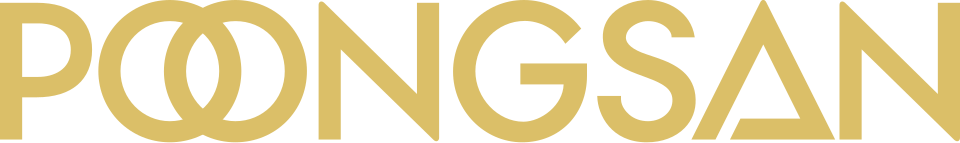

풍산 Poongsan
풍산(Poongsan)은 서울특별시에 본사를 둔 대한민국의 구리·구리 합금 소재 및 가공품 제조사이자 탄약 생산사이다. 신동사업과 방산사업을 두 축으로 운영한다.
최종 업데이트

풍산은 어떤 브랜드인가
풍산은 구리 및 구리 합금 소재와 가공품을 제조·판매하는 신동사업과 각종 탄약류를 생산하는 방산사업을 함께 운영한다. 매출 구성은 신동부문 약 72%, 방산부문 약 28%이다.
신동부문은 전기동 가격 변화의 영향을 받으며, 가격 상승 시 실적이 좋아지고 하락 시 실적도 낮아지는 구조이다. 전기동 가격은 세계 경기와 수요 변화에 따라 움직여 글로벌 시장의 선행지표로도 활용한다.
2011년부터 2014년까지 매분기 약 7천억원의 매출과 100억대의 당기순이익 흑자를 기록했다. 2024년 시가총액은 1조7천억원대이며, 장기화된 전쟁에 따른 방산부문 매출 증가로 성장세를 기록했다.
풍산은 어떻게 시작되고 성장했나
풍산의 뿌리는 1968년 부평공장 설립을 시초로 국내 신동공업을 시작한 풍산금속공업주식회사이다. 현재 회사는 구 풍산의 지주회사 체제 전환 과정에서 2008년 7월 인적분할로 신규 설립했다.
같은 달 유가증권시장에 분할 재상장했으며, 풍산홀딩스와 분리된 뒤 신동과 방산 사업을 이어갔다. 2010년 대전 풍산기술연구원을 기공하고 LIG POONGSAN PROTECH(주)를 합작 설립했으며, 2011년 본사 사옥을 충정로로 이전했다.
방산수출과 품질경영 분야에서 국방부장관 및 국무총리 표창을 수상했다.
풍산의 브랜드 아이덴티티는 무엇인가
구리 소재와 가공품을 다루는 신동사업과 소구경부터 대구경까지 탄약을 생산하는 방산사업을 한 회사에서 함께 운영한다.
풍산의 대표 제품과 서비스는 무엇인가
신동부문은 동 및 동합금 판·대, 리드프레임재, 주석도금재, 건축용 동관, 공업용 동관과 합금관을 생산한다. 동 및 동합금 봉·롯드·선, 주화용 소전, 동 지붕재도 신동부문의 주요 제품이다.
방산부문은 소구경부터 대구경까지 여러 규격의 군용 탄약을 생산한다. 이와 함께 스포츠용 탄약, 추진화약, 탄약 부분품과 정밀 단조품을 제조한다.
2025년에는 현대로템향 대구경 탄약을 수주했다.
풍산은 지금 어떤 상태인가
풍산은 2008년 지주회사 체제 전환에 따라 풍산홀딩스와 분할된 상장회사이다. 2024년 시가총액은 1조7천억원대이며, 장기화된 전쟁의 영향으로 방산부문 매출이 증가했다.
BS투자증권은 방산부문을 기반으로 안정적인 성장을 이어가는 회사로 평가했다.
풍산 로고는 어떻게 변해왔나
자주 묻는 질문
풍산는 어느 나라 브랜드인가요?
풍산는 한국의 에너지·산업재 브랜드입니다.
풍산는 언제 설립되었나요?
풍산는 1968년 설립되었습니다.
풍산의 브랜드 아이덴티티는 무엇인가요?
구리 소재와 가공품을 다루는 신동사업과 소구경부터 대구경까지 탄약을 생산하는 방산사업을 한 회사에서 함께 운영한다.
풍산의 대표 제품은 무엇인가요?
신동부문은 동 및 동합금 판·대, 리드프레임재, 주석도금재, 건축용 동관, 공업용 동관과 합금관을 생산한다.
풍산는 어느 기업이 소유하고 있나요?
풍산은 2008년 지주회사 체제 전환에 따라 풍산홀딩스와 분할된 상장회사이다.
풍산의 본사는 어디에 있나요?
풍산의 본사는 서울특별시에 있습니다(위키데이터 기준).
풍산의 공식 웹사이트는 어디인가요?
풍산의 공식 웹사이트는 https://www.poongsan.co.kr/main 입니다.
출처와 검증
풍산 관련 참고: 공식 웹사이트 · 위키데이터 Q12622086 · 한국어 위키백과 · 영어 위키백과. 브랜드명은 한글과 원어를 함께 표기하되 데이터에 없는 표기는 만들지 않습니다. 기원 국가·설립연도는 검수된 정의문에서 확인된 값을 우선하고, 없을 때만 공식 웹사이트 URL이 일치하는 위키데이터 개체의 값을 씁니다. 위키데이터 값은 2026-09-20 기준입니다.